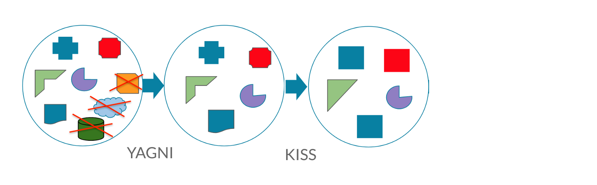
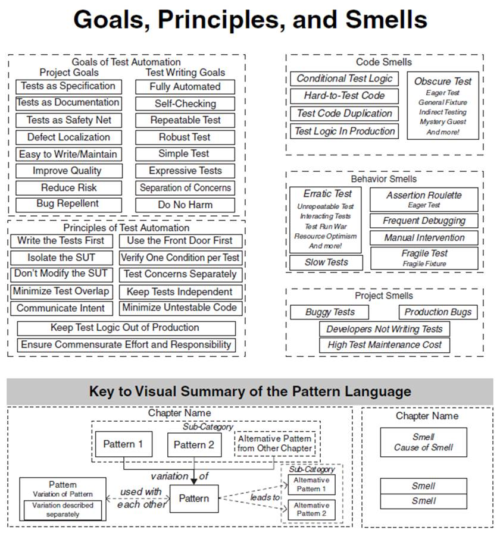

Design patterns and concepts
In Test automation

Who am I?
- Perpetual beta learner
- QA Manager with groundwork experience
- Test architect who enjoys the craft

Table of contents
-
Test harness architecture
-
Design patterns and concepts in test automation
-
xUnit patterns
-
CICD pipelines
Test harness architecture

Automated test framework
Test harness is a collection of software and test data configured to test a program unit by running it under varying conditions and monitoring its behavior and outputs. It has three main parts:
the test execution engine (a.k.a Core features),
test scripts (our Business domain model)
and the test data
Test code is Production code
Same concepts, principles and care should be applied.
SDLC phases too!
Meaning, we should unit test our Engine design and logic.
Workflow and good practices, like Git branching.
Maintenance and low complexity are most cfitical.
Architecture of the framework
It's the highest level of abstraction of a system. What kind of data is used (static, generators, files), how do modules interact with each other, reporting and logging.
Then move to chooce the frameworks, languages, scope, goals, 3th party dependencies and integrations
Types of Automation Frameworks
Record & Playback, has its place under the sun. With disposable tests, simple setup and no coding skills required - fits perfectly in short lived projects or non technical team.
The recorded tests should not be fixed! Rather, used only until fit, to free time and support you.
Types of Automation Frameworks (2)
Modular and Data-Driven frameworks rely on different modules or exported scripts that are later combined into more complex tests.
Data layer is added on top of other types, so to segregate the test script logic and the test data from each other. Also, to power up the input combinations.
Types of Automation Frameworks (3)
A Library framework, upgrade the Module-Based Testing one, by segregating the application into common functions. It can determine the common steps, group them into functions under a library, and call those functions in the test scripts whenever required.
Keyword-Driven frameworks lay out each function of the application under test in a table with a series of instructions in consecutive order for each test that needs to be run. The test data and script logic are again separated.
Types of Automation Frameworks (4)
A Behavior-Driven Development frameworks, lay out easily readable and understandable format for the stakeholders. The BDD markups are integrated well with the programming IDEs.
Hybrid testing frameworks is a combination of more than one of the before mentioned ones. The best thing about such a setup is that it leverages the benefits of all kinds of associated frameworks.
Types of Automation Frameworks (5)
AI-powered frameworks are mostly bare promises for systems that can write automated tests automatically, codeless tests, or effortless/almost zero test maintenance.
Future of testing is yet to be achieved!
Design patterns and concepts in test automation

Design principles
A principle is a type of concept. A concept is an idea about something. A principle is ordinarily meant to represent a special relationship or rule that is required or expected to be in effect.
Design principles provide high level guidelines to design better software applications. They do not provide implementation guidelines and are not bound to any programming language.
SOLID Principles
Single Responsibility, states that class should have one, and only one, reason to change.
Open-closed Principle: Software entities should be extendable without actually changing their contents.
Liskov Substitution simply means, that a subclass class should be substitutable for their parent.
Interface Segregation, implies that one should break down the interfaces in many smaller ones, so they better satisfy the exact needs of our clients.
Dependency Inversion can be boiled down to Depend on Abstractions not on implementation details.
Other Principles
Don't repeat yourself aims to reduce repetition of code, replacing it with abstractions or using data normalization to avoid redundancy.
You Ain't Gonna Need It, advises not to add functionality until deemed necessary.
Keep It Simple, Stupid states that most systems work best if they are kept simple rather than made complicated.
Putting it all together

Putting it all together

Putting it all together

Putting it all together
Putting it all together
Putting it all together

Putting it all together
xUnit patterns
xUnit Family
xUnit tools, and more importantly the philosophy, offer up a huge opportunity to programming teams.
An opportunity to write powerful regression test suites that enable teams to make drastic changes to a code-base with far less risk.
Opportunities to re-think the design process with Test Driven Development.
xUnit Patterns
There are more than 60, reusable solutions to a commonly occurring problems within a given testing context.
Making tests first class citizens.
Will improve your framework structure, allowing clean and small, yet powerful extensions.